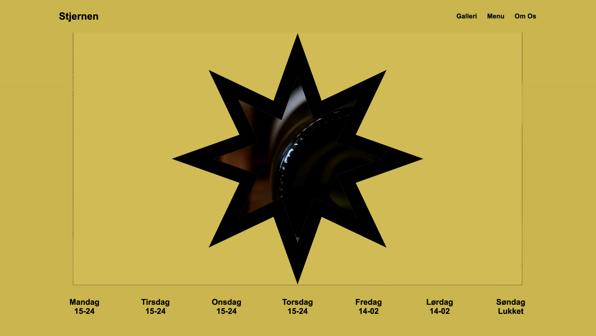
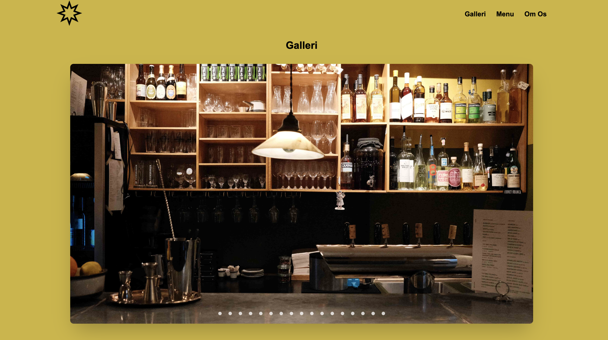
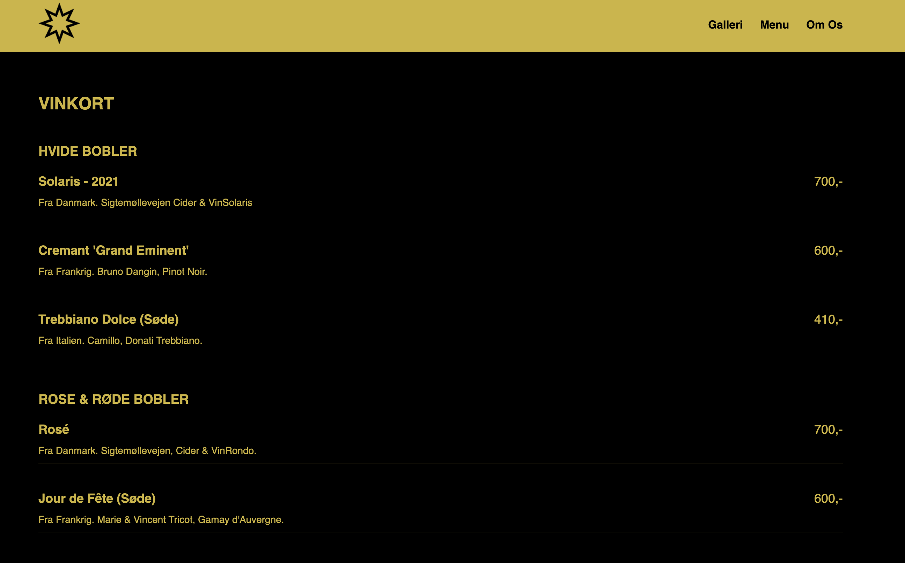

Temabeskrivelser:
Jeg har gennem dette semester tilegnet mig viden om front end design, der gør mig i stand til at kode hjemmesider med html, css og javascript. Derudover har jeg arbejdet meget med kreative processer og idéudvikling til udvikling af ønskede sites. Det har været et semester med en enorm stejl læringskurve, men mange koder, funktioner og sammenhængen af dem jeg har haft udfordringer med at lære.
Tema 2: Grundlæggende Web
Dette tema var begyndelsen på at lære et helt nyt sprog. Og det tog mig en masse tid for at se sammenhæng mellem mange forskellige koder, deres funktioner, hvordan html og css hænger sammen. Men også hvordan man så oploader sine filer til sit domænenavn, inden det selvfølgelig valideres. Jeg blev hurtigt nysgerrig og blev glad for mine små sejre inden for design og inkorporering af billeder i forskellige grids.
Tema 3: Grundlæggedne UX/UI
Dette tema handlede helt klart mest om design og forberedelse på at lave mockups og prototyper, inden man for alvor begyndte af kode sider til sit eget site, med udgangspunkt i et selvvalgt emne. Og fordi jeg stadig var i gang med en stejl læringskurve, hvad angik forståelse for html- og cssfunktioner, valgte jeg at gå med et minimalistisk udtryk til mine sider. For det skulle være mine billeder der skulle være i fokus. Men jeg havde også fokus på brugervenlighed og arbejde med at lave mit site så intuitivt som muligt for brugeren at navigere rundt på sitet.
Tema 4: Animation
I dette tema har vi skulle arbejde med design af eget spil. Hvilket
skulle vise sig af være, i hvert fald for mig, svære end forestillet.
Udvikling af mit design og idé gik fint på papir. Men jeg blev har
været meget udfordret med at tegne i Adobe Illustrator, fordi jeg slet
ikke er vant til at tegne med en mus.
Og så har jeg følt mig
tidsbegrænset på at lære at skulle skabe orginalt indhold til UI- og
spilelementer. Men jeg er stadig blevet glad for min minimalistiske
kawaii stil, som jeg sagtens kunne se mig selv videreudvikle på
henover tid.
Tema 5: Grundlæggende indhold
Indenfor dette tema fik vi stillet to opgaver, hvor den første handlede om at lære at optage videoklip og tage billeder til et site, med udgangspunkt i passion. Vi blev indroduceret til storyboards, color correction og Premiere Pro. Men Premiere Pro viste sig at give mig en del udfordrigner, når jeg oploadede mine videofiler. Så i stedet tog jeg valget om at redigere mine klips i Capcut, eftersom det var det program jeg kunne navigere rundt i, og som kunne hjælpe mig med at løse opgaven med et færdigt produkt. Men jeg lærte en masse om koordinering af møde med hovedpersonen fra filmen, lærte at finde locations, lærte om kameravinkler og lærte hvordan lyd optages, redigeres og sættes sammen med vieoclips.
I anden opgave var vi fire om at redesigne en hjemmeside for et selvvalgt firma. I gruppen påtog jeg mig en rolle som koordinator for hvordan vi kunne løse projektet med overskeligt. Men jeg lærte meget omkring vigtigheden i af have fælles visuelle vision. Fordi det var svært til tider at skulle forene fire forskellige holdninger til udstryk og stil. Selvom jeg synes vi var gode til at give hinandens idér plads. Men set i bakspejlet, havde det nok gavnet, hvis det kun havde være én der bestemte det visuelle udtryk. Så blev vi også intruduceret til GitHub, og lærte, hvor smart det kan være, når man er flere der arbejder i samme projekt. Selvom det også undervejds gav os en del bøvl ifm. at committe ændringer.
  